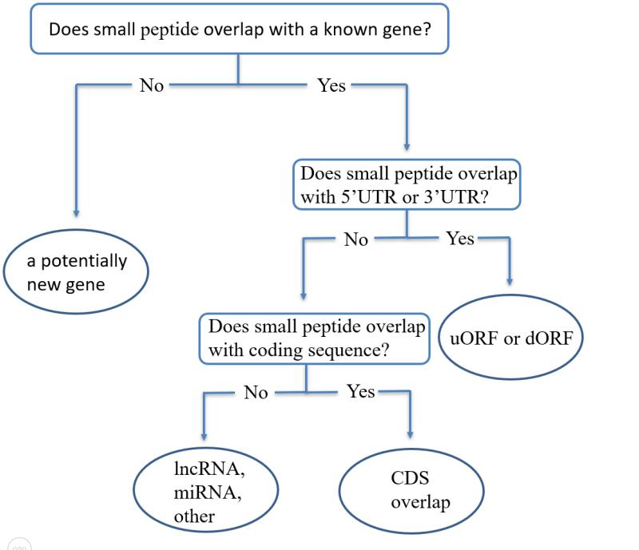

SPAT is a free and public database containing small peptides encoded by small open reading frames(sORFs) of Arabidopsis thaliana. The database has been updated on February 13, 2020 and contains a comprehensive list of 8080 small peptides. Our current research at Jing Li lab, School of Life Sciences and Biotechnology, Shanghai Jiao Tong University focuses on the discovery of novel peptides. We are trying to figure out the correlation between small peptides and human cancer, plant development.
236 small peptides in the database identified by our research. Their IDs start with “SPAT”. We predict small peptides from whole genome of Arabidopsis thaliana by six-frame translation and use MaxQuant to identify small peptides. Eight small peptides are picked to carry out PCR and gel electrophoresis and two of them are successfully verified.
Small peptides can be classified as 5'UTR, 3'UTR, Coding Sequence overlap(CDS overlap), lncRNA , miRNA and other according to their position relationship of annotated genes of Arabidopsis thaliana (Fig 1). According to recent research, the chromosome location of sORFs and their position relationship of annotated genes may have connection with small peptides’ function, so position relationship is shown in our database.

Fig.1 Position relationship of small peptides between annotated genes of Arabidopsis thaliana